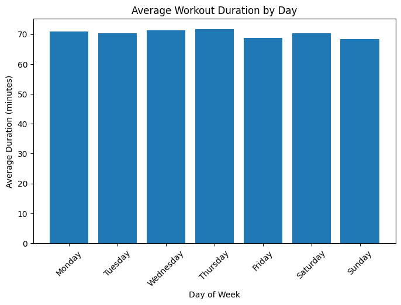

Introduction
For this lab, I used AI as a collaborator in two different ways: redesigning and enhancing my portfolio (Experiment A) and generating a Python visualization in Google Colab using my gym attendance dataset (Experiment B). In both cases, the goal was not just to produce working code, but to actively understand, modify, and evaluate what the AI generated. Vibe coding, as I understand it, is the practice of describing what you want in plain language, letting the AI generate code based on that description, and then testing, refining, and shaping the output until it reflects your actual vision.
Technical Understanding
Experiment A: AI-Enhanced Portfolio
For Experiment A, AI helped me transform my portfolio from a basic flat layout into something more polished and professional. It generated a full-screen hero section for the homepage, a sticky navigation bar with a frosted-glass scroll effect, scroll-triggered fade-in animations using the IntersectionObserver API, and a consistent design system built around CSS custom properties, variables for colors, fonts, shadows, and spacing defined once and reused everywhere. It also helped me apply the same visual language across all lab pages by generating a compact dark banner header for each one.
I understood the overall logic behind most of these features, especially how CSS variables create consistency and how scroll events trigger class changes on the navbar. The part that was genuinely new to me was the IntersectionObserver API. I understand what it does, it watches elements and fires a callback when they enter the visible area of the browser window, and I understand why it is used for scroll animations. But if I had to write that code from scratch without any reference, I would still need to look up the syntax. The concept is clear to me; the implementation details are not yet second nature.
The main modification I made was to the color palette. The AI's first pass used a generic purple-and-white scheme that did not feel like my own aesthetic. I pushed back and described wanting something warm, editorial, and distinctive, which led to the deep navy, cream, and gold palette the site uses now. I also caught a mobile responsiveness issue after testing in my browser: some headings were overflowing on smaller screens. I brought that back to the AI and it fixed it using CSS clamp(), a function I had not encountered before. I also manually updated the active class on each lab page's nav link, since the AI had no way of knowing which page was which.
Experiment B: Python Visualization in Google Colab
For Experiment B, I used AI to generate Python code that loaded my daily gym attendance dataset from Google Drive, checked for missing values, converted the visit_date column into datetime format, and calculated the average workout duration grouped by day of the week. The result was a bar chart showing which days had the highest average workout lengths.
The AI's first attempt caused a KeyError because it assumed my dataset had a column named "Date", but my actual column was named visit_date. I had to run df.columns to check the real column names and then correct the code. That debugging moment showed me how strict pandas is with exact column name matching, including capitalization. I understand how groupby() calculates averages across categories, and why converting a column to datetime format unlocks features like .dt.day_name(). The reindexing step, reordering the days into calendar order, made sense to me once I saw it, though I would not have thought to include it without the AI suggesting it first.

Process Evaluation
Where AI Was Genuinely Helpful
AI was most useful when I had a clear vision in my head but lacked the technical vocabulary to build it. The scroll-triggered navbar is a good example, I had seen that effect on professional sites and knew exactly what I wanted, but I had no idea which JavaScript events or CSS properties were involved. Being able to describe it conversationally and get working code back was a real accelerator. AI was also helpful for anything involving repetitive structure, like applying the same navbar and footer consistently across four separate lab pages. Doing that manually would have been slower and easier to make inconsistent in small ways. In Experiment B, AI was useful as a starting point for Python code I could not have written from scratch, it gave me a functional structure I could then test, debug, and understand.
Where AI Fell Short
The AI occasionally produced code that was more complicated than the problem required. For one of the card hover effects in Experiment A, it wrote a version using JavaScript event listeners when the whole thing could have been handled with a few lines of CSS, I had to specifically ask it to simplify. In Experiment B, it made an incorrect assumption about my column names, which caused a runtime error I had to debug manually. There were also moments in both experiments where I had to slow myself down and ask follow-up questions, "explain why you used this," "what would happen if I removed this line", to make sure I was actually engaging with the code rather than just collecting it.
What Stays Human
The AI could generate code, but it could not make the decisions that actually defined the work. It did not know that I wanted my portfolio to feel warm rather than cold, or editorial rather than generic. Those directions came entirely from me. The AI also could not test the site the way I did, opening it in a browser, resizing the window, clicking through pages, and noticing when something felt off. In Experiment B, it could not know what my actual dataset column names were. Verification, judgment, and aesthetic direction stayed with me throughout both experiments.
Ethical & Pedagogical Considerations
Does Vibe Coding Help You Learn?
I think the honest answer is: it depends entirely on what you do with it. There were moments in this lab where I genuinely learned something new, the IntersectionObserver API, the clamp() function, how CSS custom properties work as a system, how groupby() works in pandas, because I slowed down and asked the AI to explain what it had generated. In those moments it felt like having a patient tutor available on demand. But there were also moments where I moved too fast, accepted code I did not fully understand, and retained nothing. The tool itself is neutral. What determines whether vibe coding builds your skills or bypasses them is whether you treat the AI's output as something to understand or just something to copy.
Attribution and Ownership
In an academic context, proper attribution means being specific and honest about your role. Saying "I used AI" is not enough, you should be able to describe what you asked for, what the AI produced, what you changed, and what decisions you made that the AI could not make for you. In a professional setting the standard is less formal, but the underlying principle is the same: you are responsible for the code you put into the world, regardless of how it was generated. If it breaks, or causes a problem, "the AI wrote it" is not a defense. Ownership of the output belongs to the person who chose to use it, reviewed it, and deployed it.
My Guidelines Going Forward
After this experience, I have a clearer sense of when I want to use AI in coding and when I do not. I will use it when I am working with unfamiliar syntax or APIs and need a concrete starting point, when I need to produce repetitive structure consistently across many files, or when I am genuinely stuck and need to see one possible approach before deciding on a direction. I will not use it as a way to skip the thinking, I will not submit or build on code I cannot at least read and roughly explain in my own words. When the goal is to actually learn something new, I want to try writing it myself first, even if I fail, because the struggle is where the understanding comes from. The version of vibe coding I want to practice treats AI as a collaborator that helps me move further than I could alone, not a replacement for having to think at all.